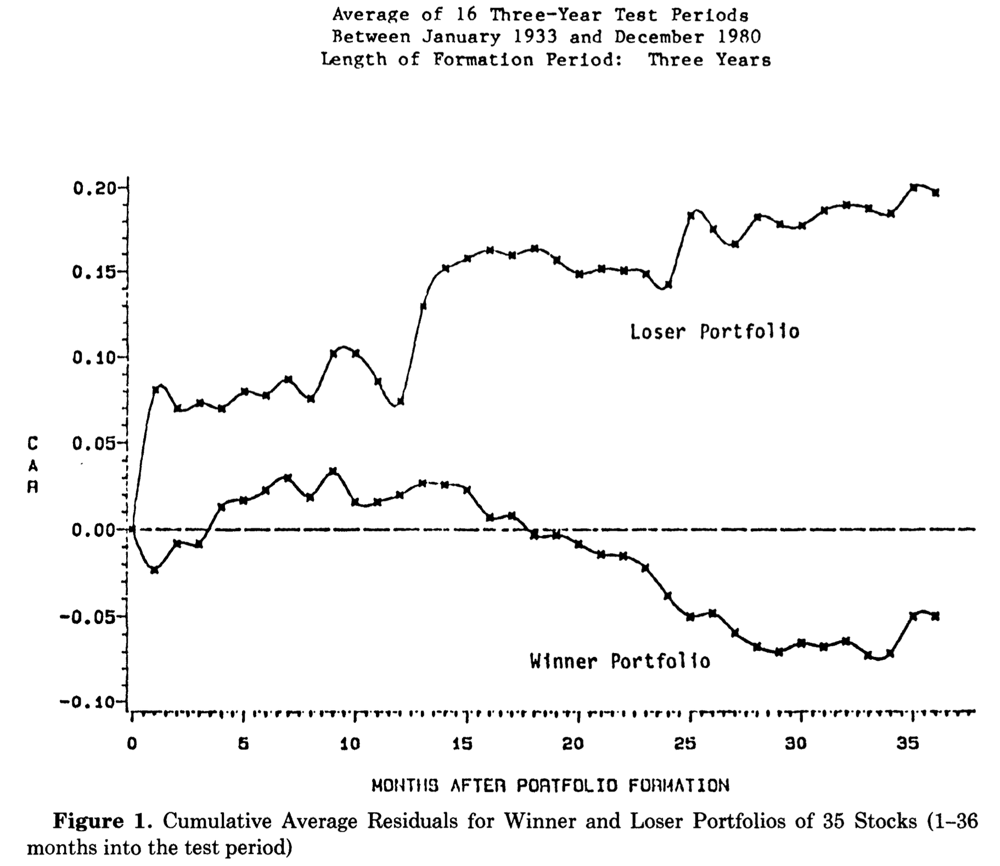

9 行動ファイナンス
行動ファイナンス(behavioral finance theory)の主要参考文献
- Beyond Green and Feear, 2002, (Shefrin, H. Oxford University Press, Chapter 1-4) (行動ファイナンスと投資の心理学，鈴木一功訳，東洋経済新聞社)
- Behavioural Finance Insights into irrational minds and markets, 2002, Montier, J, Willey & Sons, Chapter 1 (行動ファイナンスの実践 投資家心理が動かす金融市場を読む，真壁昭夫，川西論，栗田昌孝訳，ダイヤモンド社，2005年)
9.1 1. 行動ファイナンスの3つのテーマ
通常の(伝統的)ファイナンスの枠組みで，現実の世界を説明しようとすると，さまざまなアノマリー(anomary)が存在する。 ここでは，アノマリーの原因を心理的な要因に関連づけた理論による説明を紹介する。 これらの理論が，いわゆる行動ファイナンス(behavioral finance)である。
行動ファイナンスは，アノマリーの原因を以下の3つのテーマから議論する。
- 投資家は，ヒューリスティック(heuristic)，すなわち経験則に基づいて意思決定を行う。そして，経験則に基づいて行動するがゆえに間違った意思決定を行う。
- 投資家の意思決定は実質だけでなく，形式(framing)にも影響される。
- 誤りと意思決定のフレームは，市場で成立する資産価格に影響を与える。
p.3 の図を挿入
9.2 2. ヒューリスティックに起因するバイアス
人々は経験則に基づいて行動する傾向があり，それによって，人々は誤りを犯してしまう。言い換えると，予測可能な誤りを犯してしまう。
- 経済学的な解釈の1つとして，期待効用を求める際に，主観的な確率を利用して期待効用を計算してしまうことによって発生する誤りが挙げられる。 通常のファイナンスの世界(以下では伝統的な考え方とよぶ)では，すべての人が客観的に認識している「生起確率分布」をもとに期待効用を計算する。しかしながら，人々は，経験則により，「主観的な確率分布」をもとに計算を行う。従って，歪められた確率分布をもとに期待効用を計算し，意思決定を行うので，客観的にみると誤った決断を下してしまう(誤差でない誤りを犯す)…。
- 伝統的な考え方では，「人々が合理的に行動する限り，人々は(予測可能な)誤りを起こさない。」
9.2.1 A. 代表性ヒューリスティック
大学の入試事務局では，入学試験が成功しているかどうかを判断する1つの基準は，入学が認められた学生がよい成績を修めているかどうかである。 従って，入試担当者が，受験者の高校時代の平均成績値(GPA)の水準に基づき，入学後のGPAの予測を試みている状況を考える。 1990年から1992年の間にサンタクララ大学に入学した学部生に関する実際の成績データがあり，同期間中に大学に入学し卒業した学生の
- 高校時代の GPA 平均 = 3.44 (標準偏差 =0.36)
- 大学在学中の GPA 平均 = 3.08 (標準偏差 =0.40)
であった。
質問：もしあなたが，高校時代のGPAが 2.20，3.00，3.80 である3人の学生について，この高校時代の GPA のみに基づいて，大学在学中の GPAを予測するならば，どのような予測を立てるか？
| 高校時代のGPA | 大学在住中の実際GPA | 大学在住中の予想GPA |
|---|---|---|
| 2.20 | 2.70 | 2.03 |
| 3.00 | 2.93 | 2.77 |
| 3.80 | 3.30 | 3.46 |
- GPA平均(3.08)の 90%の信頼区間(2.42,3.74)なので，3 つのグループ間の違いは誤差の範囲。
- しかしながら，予想 GPA 値から言えることは，3 つのグループ間の違いは誤差ではない。 特に，高校時代の GPA が低い人に対して，我々は，厳しい評価を行っている。
- 高校時代に高い GPA を持った学生⇔高い能力を持った学生の代表
- 高校時代に低い GPA を持った学生⇔低い能力を持った学生の代表
普通のコインを6回連続して投げた結果，以下のような結果のどちらかが起こりやすいだろうか？
- 表裏表裏裏表
- 表表表裏裏裏
5回連続して表が出たとき，6回目の予想をしなさい。
多くの人は①と答える。
①をよくある結果の代表，②を特異な結果の代表と捉えてしまう。多くの人は「裏」と答えがちになる。 「いままでめったにないことが起こっていた」と捉える。
⇒ 代表性ヒューリスティックが意思決定の誤りを引き起こす。
ある時点において，過去3年間に遡って極端にリターンが低かった株式(敗者株)は，極端にリターンの高かった株式(勝者株)に比べて，その後3年間においてはるかに株価が好調である。
